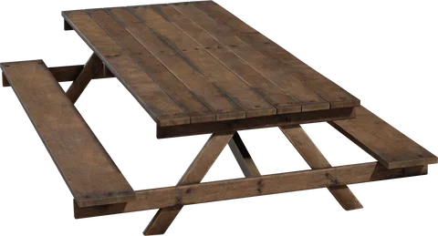
01 / 3D model
Wooden Picnic Table
A single gathering spot beside the cabin porch.
CC0 asset · Ulan Cabanilla
Source preview: Poly Haven
Timberglass Cove is now playable. Your 19 approved choices are incorporated; Wooden Crate 02 was not added. This gallery keeps the source previews available for review.
Recommend a short par 4 to fit the current 18-hole par-72 plan. A generous front green leads to a short central bridge and a separate island putting surface with the pin.
The bridge is for walking; reaching the pin island would be a deliberate chip across the channel. Keep the cabin and porch outside the shot corridor.
Cabin itself: a custom assembled log structure using our existing bark and these timber materials. I have not verified a ready-made free cabin mesh that matches our realism. Items 17–20 are materials, not buildings.
Use a sheltered water area with small ripples and reflections, without the ocean whitecaps. Existing ocean stays as it is.
All listed source assets are Poly Haven CC0. Existing assets are marked so we can reuse them. Preview images are credited to Poly Haven; the full models have not been downloaded for this review.

A single gathering spot beside the cabin porch.
CC0 asset · Ulan Cabanilla
Source preview: Poly Haven
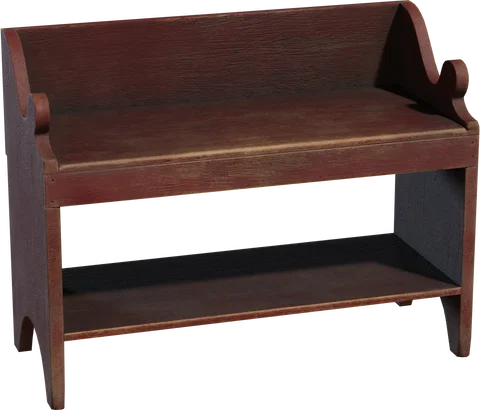
One worn seat overlooking the quiet inlet.
CC0 asset · Kirill Sannikov
Source preview: Poly Haven
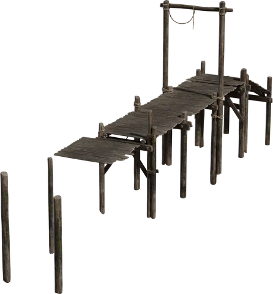
Short central footbridge to the separate pin island; rework supports to suit the banks.
CC0 asset · Rico Cilliers
Source preview: Poly Haven
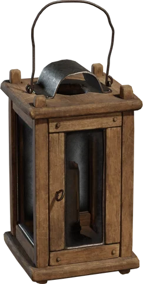
Warm porch light and one restrained tee marker.
CC0 asset · James Ray Cock
Source preview: Poly Haven
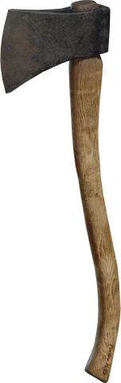
Lean beside a chopping stump, outside the walking route.
CC0 asset · Ulan Cabanilla
Source preview: Poly Haven
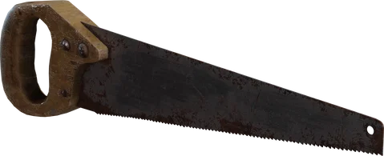
Small woodworking detail under the porch.
CC0 asset · Konrad Szałankiewicz
Source preview: Poly Haven
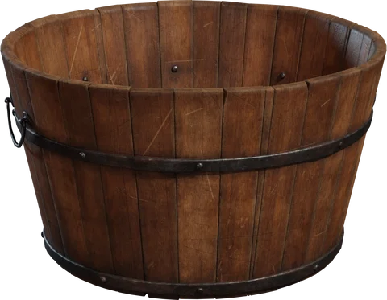
One weathered bucket by the steps.
CC0 asset · James Ray Cock
Source preview: Poly Haven
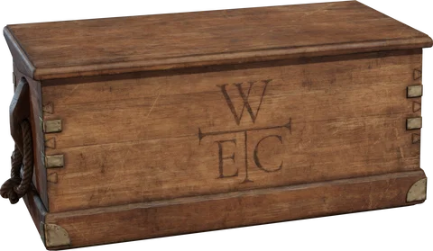
A modest supply stack tucked under the eaves.
CC0 asset · James Ray Cock, Jurita Burger
Source preview: Poly Haven
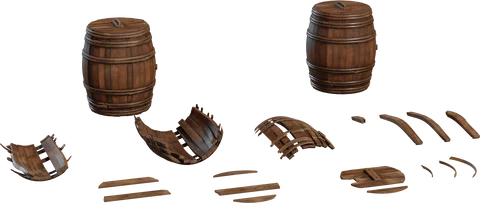
One or two rain barrels, not another pirate cargo pile.
CC0 asset · James Ray Cock
Source preview: Poly Haven
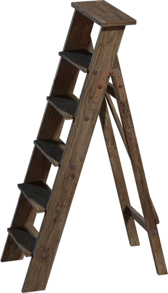
A stored ladder against the cabin wall.
CC0 asset · JN_3DPRINTINGNERD
Source preview: Poly Haven
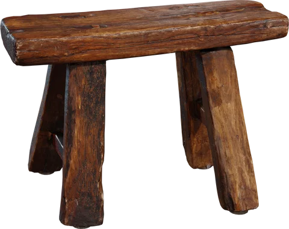
A small porch seat, optional instead of the bench.
CC0 asset · Kuutti Siitonen
Source preview: Poly Haven
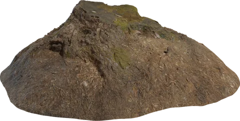
Chopping block at the woodland edge.
CC0 asset · Rob Tuytel
Source preview: Poly Haven
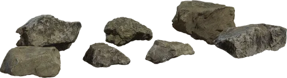
Low shoreline stones around the sheltered pond.
CC0 asset · Kless Gyzen
Source preview: Poly Haven
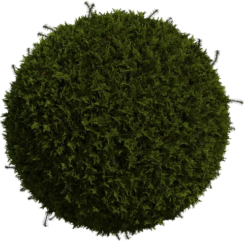
Sparse shaded ground cover near the cabin foundation.
CC0 asset · Rob Tuytel
Source preview: Poly Haven
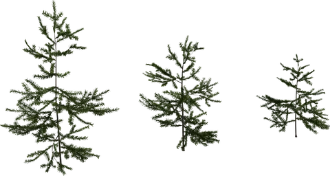
Young trees between the existing giant pines.
CC0 asset · Rob Tuytel, Rico Cilliers
Source preview: Poly Haven
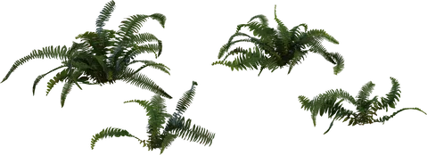
A few shaded banks, clear of the maintained turf.
CC0 asset · Rob Tuytel, Rico Cilliers
Source preview: Poly Haven
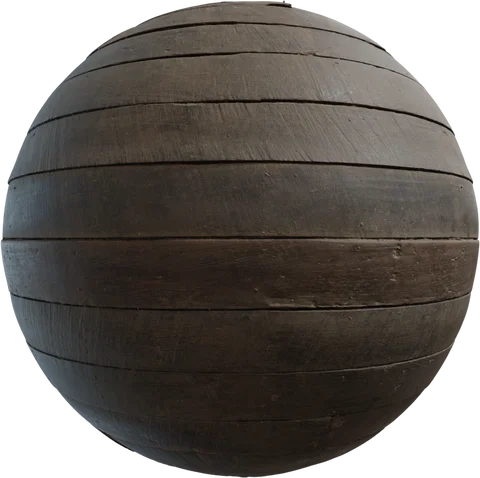
Porch and bridge decking material; not a cabin model.
CC0 asset · Amal Kumar
Source preview: Poly Haven
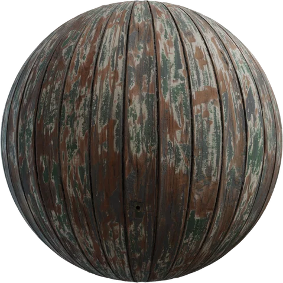
Weathered trim reference. Use sparingly; not the main log wall.
CC0 asset · Dimitrios Savva
Source preview: Poly Haven
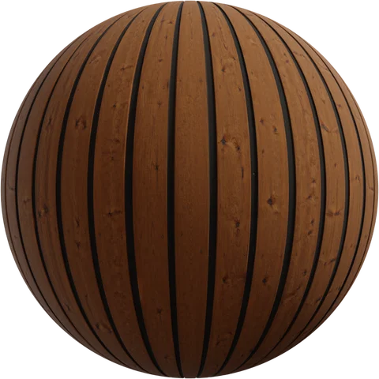
Rustic timber roof material for a custom cabin.
CC0 asset · Rob Tuytel
Source preview: Poly Haven
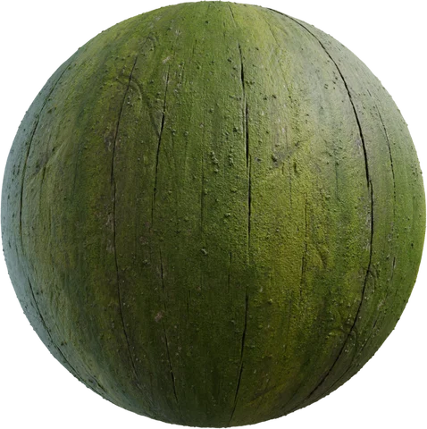
Small damp accents on the bank-side timber.
CC0 asset · Rob Tuytel
Source preview: Poly Haven